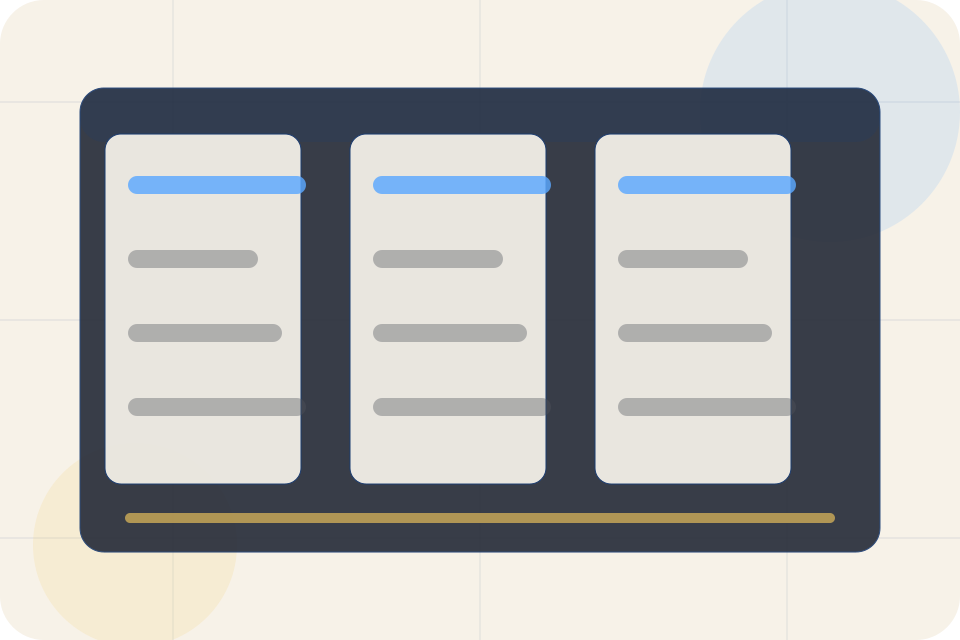

Best Fit
Who should use areas and when it belongs in the services journey.
Services / 01
Services opens as a clear legal decision hub: what Legal offers, who it helps, why it matters, and which route to take first.
The first screen combines positioning, proof, primary action, and fast internal navigation, so people can act immediately or compare the rest of the services route with context.
Blue legal software hero
Select the closest route and Legal keeps the next step, proof, and follow-up expectation aligned with privacy and legal certainty.

Services / 02
Areas explains the practical scope, best-fit situations, and expected outcome so legal visitors can compare options without decoding jargon.
The section keeps the offer concrete: what is included, who it is best for, what decision it supports, and which linked route gives the deeper detail.
Explore ServicesWho should use areas and when it belongs in the services journey.
The practical benefit visitors should expect after choosing this route.
Where to compare details, pricing, support, or contact options before committing.
Services / 03
Legal explains the practical scope, best-fit situations, and expected outcome so legal visitors can compare options without decoding jargon.
The section keeps the offer concrete: what is included, who it is best for, what decision it supports, and which linked route gives the deeper detail.
Explore ServicesWho should use legal and when it belongs in the services journey.
The practical benefit visitors should expect after choosing this route.
Where to compare details, pricing, support, or contact options before committing.
Services / 04
Compliance explains the practical scope, best-fit situations, and expected outcome so legal visitors can compare options without decoding jargon.
The section keeps the offer concrete: what is included, who it is best for, what decision it supports, and which linked route gives the deeper detail.
Explore ServicesLegal structures compliance around best fit, what changes, and a clear next route so visitors can compare the block quickly before they book a consultation.
Book ConsultationServices / 05
Immigration explains the practical scope, best-fit situations, and expected outcome so legal visitors can compare options without decoding jargon.
The section keeps the offer concrete: what is included, who it is best for, what decision it supports, and which linked route gives the deeper detail.
Explore ServicesWho should use immigration and when it belongs in the services journey.
The practical benefit visitors should expect after choosing this route.
Where to compare details, pricing, support, or contact options before committing.
Services / 06
Advisory explains the practical scope, best-fit situations, and expected outcome so legal visitors can compare options without decoding jargon.
The section keeps the offer concrete: what is included, who it is best for, what decision it supports, and which linked route gives the deeper detail.
Explore ServicesWho should use advisory and when it belongs in the services journey.
Services / 07
Documents explains the practical scope, best-fit situations, and expected outcome so legal visitors can compare options without decoding jargon.
The section keeps the offer concrete: what is included, who it is best for, what decision it supports, and which linked route gives the deeper detail.
Explore ServicesWho should use documents and when it belongs in the services journey.
The practical benefit visitors should expect after choosing this route.
Where to compare details, pricing, support, or contact options before committing.
Services / 08
Representation explains the practical scope, best-fit situations, and expected outcome so legal visitors can compare options without decoding jargon.
The section keeps the offer concrete: what is included, who it is best for, what decision it supports, and which linked route gives the deeper detail.
Explore ServicesWho should use representation and when it belongs in the services journey.
The practical benefit visitors should expect after choosing this route.
Where to compare details, pricing, support, or contact options before committing.
Services / 09
Scope explains the practical scope, best-fit situations, and expected outcome so legal visitors can compare options without decoding jargon.
The section keeps the offer concrete: what is included, who it is best for, what decision it supports, and which linked route gives the deeper detail.
Explore ServicesWho should use scope and when it belongs in the services journey.
The practical benefit visitors should expect after choosing this route.
Where to compare details, pricing, support, or contact options before committing.
Services / 10
Legal closes the services route with a clear action, a quick reminder of the value, and a low-friction way to book a consultation.
Visitors who are ready can use the primary action. Visitors who are still comparing can scan the section links, proof, and support routes before they book a consultation.
Book ConsultationThe final block keeps the choice simple: act now, compare one more proof route, or send enough detail for a focused response.
Book Consultationprivacy and legal certainty
A law-practice platform site with blue navigation, document panels, workflow cards, and consultation routing. Services ends with a direct path to book a consultation, plus enough context for visitors who still need to compare.
Legal and immigration information is general and does not create a lawyer-client relationship until formally engaged.